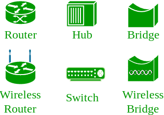

Open system:
A system which is connected to the network and is ready for communication.
Closed system:
A system which is not connected to the network and can’t be communicated with.
Computer Network:
It is the interconnection of multiple devices, generally termed as Hosts connected using multiple paths for the purpose of sending/receiving data or media.
There are also multiple devices or mediums which helps in the communication between two different devices which are known as Network devices. Ex: Router, Switch, Hub, Bridge.

The layout pattern using which devices are interconnected is called as network topology. Such as Bus, Star, Mesh, Ring, Daisy chain.

OSI:
OSI stands for Open Systems Interconnection. It is a reference model that specifies standards for communications protocols and also the functionalities of each layer.
Protocol:
Protocol is the set of rules or algorthims which define the way how two entities can communicate across the network and there exists different protocol defined at each layer of OSI model. Few of such protocols are TCP, IP, UDP, ARP, DHCP, FTP and so on.
UNIQUE IDENTIFIERS OF NETWORK
Host name:
Each device in the network is associated with a unique device name known as Hostname.
Type “hostname” in the command prompt and press ‘Enter’, this displays the hostname of your machine.

IP Address (Internet Protocol address):
Also know as Logical Address, is the network address of the system across the network.
To identify each device in the world-wide web, Internet Assigned Numbers Authority (IANA) assigns IPV4 (Version 4) address as unique identifier for each device on the Internet.
Length of the IP address is : 32-bits. (Hence we have 232 ip addresses available.)
Type “ipconfig” in the command prompt and press ‘Enter’, this gives us the IP address of the device.
MAC Address (Media Access Control address):
Also known as physical address, is the unique identifier of each host and is associated with the NIC (Network Interface Card).
MAC address is assigned to the NIC at the time of manufacturing.
Length of the MAC address is : 12-digit/ 6 bytes/ 48 bits
Type “ipconfig/all” in the command prompt and press ‘Enter’, this gives us the MAC address.
Port:
Port can be referred as logical channel through which data can be sent/received to an application. Any host may have multiple applications running, and each of this application is identified using the port number on which they are running on.
Port number is a 16-bit integer, hence we have 216 ports available which are categorized as shown below:
| Port Types | Range |
|---|---|
| Well known Ports | 0 – 1023 |
| Registered Ports | 1024 – 49151 |
| Ephemeral Ports | 49152 – 65535 |
Number of ports: 65,536
Range: 0 – 65535
Type “netstat -a” in the command prompt and press ‘Enter’, this lists all the ports being used.

Socket:
The unique combination of IP address and Port number together are termed as Socket.
Few more concepts
DNS Server:
DNS stands for Domain Name system.
DNS is basically a server which translate web addresses or URL (ex: www.google.com) into their corresponding IP addresses. We don’t have to remember all the IP addresses of each and every website.
The command ‘nslookup’ gives you the IP address of the domain you are looking for. This also provides the information of our DNS Server.
ARP:
ARP stands for Address Resolution Protocol.
It is used to convert the IP address to its corresponding Physical Address(i.e.MAC Address).
ARP is used by the Data Link Layer to identify the MAC address of the Receiver’s machine.
RARP:
RARP stands for Reverse Address Resolution Protocol.
As the name suggest, it provides the IP address of the a device given physical address as input. But RARP has become obsolete since the time DHCP has come into picture.